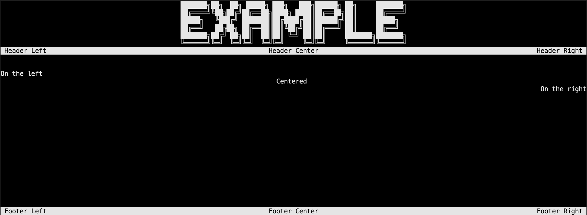
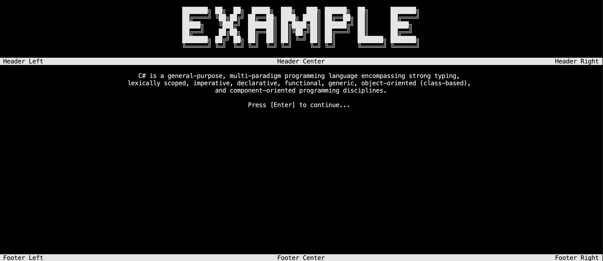
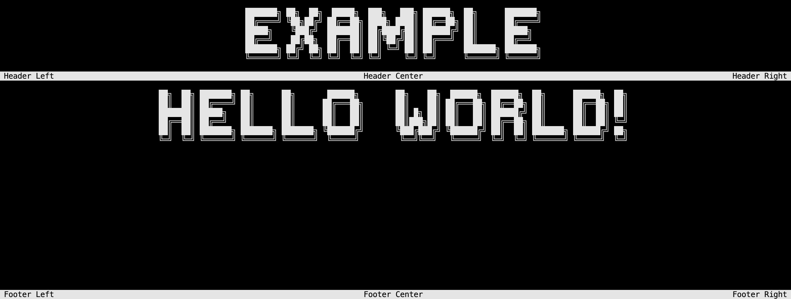
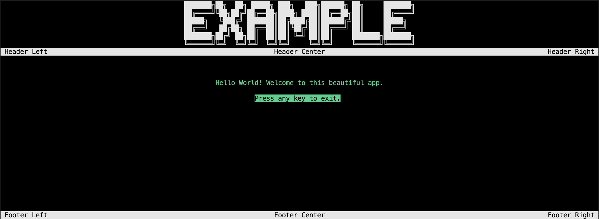

Writing on the console
Write a text in the console using placement
The WritePositionedString method is the most basic method of the library. It allows you to write a string in the console, with the possibility to specify the placement of the string within the width of the console.
Core.WriteFullScreen("Example");
Core.WritePositionedString("On the left", Placement.Left, default, 9, default);
Core.WritePositionedString("Centered", Placement.Center, default, 10, default);
Core.WritePositionedString("On the right", Placement.Right, default, 11, default);
Console.ReadKey();
 Demo with placed strings
Including continuous printing
In addition to the placement, you can also specify if you want to print the string continuously or not. If you do, the string will be printed character by character, with a delay between each character. You may also interrupt the printing by pressing any key.
Core.WriteFullScreen("Example");
Core.WriteContinuousString("Hello World! Welcome to this beautiful app.", 10);
Console.ReadKey();
Demo with continuous printing
Including Multiple Lines
If you want to write a text with multiple lines, you can use the WriteParagraph method like this:
Core.WriteFullScreen("Example");
Core.WriteParagraph(default, default, "C# is a general-purpose, multi-paradigm programming language encompassing strong typing,","lexically scoped, imperative, declarative, functional, generic, object-oriented (class-based),"," and component-oriented programming disciplines.", "", "Press [Enter] to continue...");
Console.ReadKey();
 Demo with paragraph
Include Styled Text
You can also use the WritePositionedStyledText method to write a styled text in the console. You may specify the placement, the color, the background color and the font of the text. The StyleText method allows you to style a string according to the font selected.
Core.WriteFullScreen("Example");
Core.WritePositionedStyledText(Core.StyleText("Hello World!"));
Console.ReadKey();

Including color
You can also specify the color of the elements and choose to apply the negative color to the text. Here are two example :
Core.WriteFullScreen("Example");
Core.ChangeForeground(ConsoleColor.Green);
Core.WritePositionedString("Hello World! Welcome to this beautiful app.", Placement.Center, false, 10);
Core.ApplyNegative(true);
Core.WritePositionedString("Press any key to exit.", Placement.Center, true, 12);
Core.ApplyNegative(false);
Console.ReadKey();
 Demo with color
Note
You may use the ChangeBackground method to change the background color as well.
Clear lines
Based on a line index and a number, you can clean several lines of your console. This is useful if you want to clean a specific part of your console. This way, you can choose to clean only the lines you want, and not the entire console.
Core.ClearLine(10); // Clears the line 10
Core.ClearMultipleLines(10, 2); // Clears the lines 10 and 11
Core.ClearContent(); // Clears the space between the two banners, header and footer
Core.ClearWindow(); // Clears the whole window with a continuous effect
Some properties
Heights
You may access to some useful properties concerning the heights of the visuals as:
Core.TitleHeight; // The height in the console of the title
Core.HeaderHeight; // The height of the header
Core.FooterHeight; // The height of the footer
Core.ContentHeight; // The height of the content
Catch updates
You will be able to catch if the screen has been resized with the UpdateScreen property. It will return a boolean indicating if the screen has been resized or not, or if the colors of the console has been updated.
Then you may use the UpdateScreen method to update the screen to the new values and reload the page.
if (IsScreenUpdated)
{
UpdateScreen();
}
Selection cursor
You can also change the cursor character for every menu with the SetCursor method by precising the onward and backward characters.
Core.SetCursor('>', '<');
Own font
You may create your own font by creating a font file following the format specified in the source code (it includes, the three .txt files and the .yaml file). Then, you can use the SetFont method to globally set the font of your project.
Core.SetFont("/path/to/your/font/folder/");
Warning
By default, the font is only used for the title. If you want other text to use the font, you have to do it manually using the WritePositionedStyledText method (for an array) or a simple Console.WriteLine is enough for a styled string.
Color panel
Finally, you may use the GetColorPanel property to get the color panel of the console.
var foregroundColor = Core.GetColorPanel.Item1;